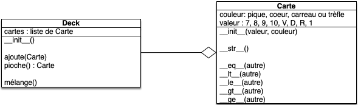

Projet agrégation : cartes
Projet utilisant l'agrégation d'objets pour jouer aux cartes.
Nous allons ici continuer ce que nous avons commencé lors du projet cartes. Donc si vous ne l'avez pas déjà fait, commencez par le faire :
Pour les besoin de ce TD, nous allons présupposer que vous avez une classe Dé qui fonctionne. La version minimale que nous allons utiliser ici est disponible ci-après. Mais ne vous sentez pas obliger de l'utiliser.
une implémentation de la classe Carte
une implémentation de la classe Carte
fichier carte.py :
SEPT = "sept"
HUIT = "huit"
NEUF = "neuf"
DIX = "dix"
VALET = "valet"
DAME = "dame"
ROI = "roi"
AS = "as"
PIQUE = "pique"
COEUR = "cœur"
CARREAU = "carreau"
TREFLE = "trèfle"
VALEURS = [SEPT, HUIT, NEUF, DIX, VALET, DAME, ROI, AS]
COULEURS = [TREFLE, CARREAU, COEUR, PIQUE]
class Carte:
def __init__(self, valeur, couleur):
self._couleur = couleur
self._valeur = valeur
@property
def couleur(self):
return self._couleur
@property
def valeur(self):
return self._valeur
def __str__(self):
return self.valeur + " de " + self.couleur
def __repr__(self):
return "Carte(" + repr(self.valeur) + ", " + repr(self.couleur) + ")"
def __eq__(self, other):
return (self.valeur == other.valeur) and (self.couleur == other.couleur)
def __ne__(self, other):
return not (self == other)
def __lt__(self, other):
if VALEURS.index(self.valeur) != VALEURS.index(other.valeur):
return VALEURS.index(self.valeur) < VALEURS.index(other.valeur)
return COULEURS.index(self.couleur) < COULEURS.index(other.couleur)
def __le__(self, other):
return (self == other) or (self < other)
def __gt__(self, other):
return not (self <= other)
def __ge__(self, other):
return (self == other) or (self > other)
fichier test_carte.py :
import carte
from carte import Carte
def test_constructeur():
assert isinstance(Carte(carte.SEPT, carte.TREFLE), Carte
def test_str():
assert str(Carte(carte.SEPT, carte.TREFLE)) == "sept de trèfle"
def test_repr():
assert repr(Carte(carte.SEPT, carte.TREFLE)) == "Carte('sept', 'trèfle')"
def test_property():
assert Carte(carte.SEPT, carte.TREFLE).valeur == carte.SEPT
assert Carte(carte.SEPT, carte.TREFLE).couleur == carte.TREFLE
def test_operator():
assert Carte(carte.DIX, carte.COEUR) == Carte(carte.DIX, carte.COEUR)
assert Carte(carte.DIX, carte.COEUR) != Carte(carte.DIX, carte.CARREAU)
assert Carte(carte.DIX, carte.COEUR) <= Carte(carte.DIX, carte.COEUR)
assert Carte(carte.DIX, carte.COEUR) > Carte(carte.DIX, carte.CARREAU)
assert Carte(carte.DIX, carte.CARREAU) < Carte(carte.DIX, carte.COEUR)
Le but du projet est :
But du projet
Implémenter une classe Deck permettant de regrouper toutes les méthodes nécessaire au maniement d'un ensemble de cartes.
Classe Deck
En reprenant la dernière partie du projet objet : cartes, proposez une modélisation d'une classe UML d'une classe Deck permettant de jouer au jeu simplifié de la bataille en précisant son lien avec la classe Carte si l'on suppose un deck initialement vide.
corrigé
corrigé

Code
Implémentez la classe Deck dans le fichier deck.py et ses tests dans le fichier test_deck.py
Pour pouvoir jouer au jeu de la bataille, il faut une fonction qui crée un jeu :
Créez une fonction jeu32() dans le fichier deck.py qui rend un Deck contenant un jeu de 32 cartes.
Enfin, il faut un moyen de facilement transférer des cartes d'un Deck à l'autre :
Créez et testez une méthode Deck.transfert(deck, nombre) qui transfère les nombre premières cartes du deck au deck passé en paramètre.
Jeu V2
Reprenez le jeu de la dernière partie du projet objet : cartes et remplacez ses fonctions par la nouvelle classe Deck.
une implémentation du jeu sans Deck
une implémentation du jeu sans Deck
import random
import carte
from carte import Carte
paquet = []
for valeur in carte.VALEURS:
for couleur in carte.COULEURS:
paquet.append(Carte(valeur, couleur))
random.shuffle(paquet)
pioche1 = paquet[:16]
défausse1 = []
pioche2 = paquet[16:]
défausse2 = []
MAX_TOUR = 1000
N = 1
while N <= MAX_TOUR and min(len(pioche1), len(pioche2)) > 0:
print(
"Tour ",
N,
"1 : ",
len(pioche1),
"/",
len(défausse1),
" ; 2 : ",
len(pioche2),
"/",
len(défausse2),
)
carte1 = pioche1.pop()
carte2 = pioche2.pop()
print(" 1 : ", carte1)
print(" 2 : ", carte2)
if carte1 > carte2:
défausse1.extend([carte1, carte2])
print(" Joueur 1 gagne la carte de l'adversaire")
else:
défausse2.extend([carte1, carte2])
print(" Joueur 2 gagne la carte de l'adversaire")
if not pioche1:
pioche1 = défausse1
random.shuffle(pioche1)
défausse1 = []
if not pioche2:
pioche2 = défausse2
random.shuffle(pioche2)
défausse2 = []
print(pioche1, pioche2)
N += 1
# input()
print(N, MAX_TOUR)
if not pioche1:
print("joueur 1 gagne.")
elif not pioche2:
print("joueur 2 gagne.")
else:
print("match nul.")